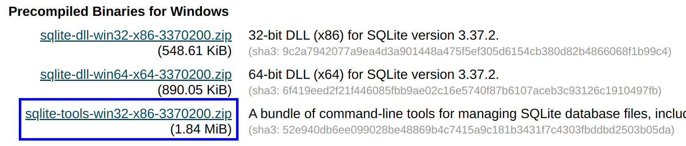

SQLite
SQLite is a relational database management system. In contrast to many other database management systems, SQLite is not a client–server database engine. Rather, it is embedded into the end program.
If you installed Anaconda, a distribution of the Python and R programming languages for scientific computing, then sqlite3 is already on your computer. Suppose sqlite3 is on the PATH, you can type sqlite3 in the terminal to verify:
$ sqlite3
SQLite version 3.36.0 2021-06-18 18:36:39
Enter ".help" for usage hints.
Connected to a transient in-memory database.
Use ".open FILENAME" to reopen on a persistent database.
sqlite>
Typing sqlite3 without any parameter will launch a transient in-memory database, and you can type either .exit or Ctrl + D to exit the command prompt.
If sqlite3 command is not found, then you can download it manually or through a package manager.
Install
As for Windows, please go to SQLite Download Page, and download the compressed package under Precompiled Binaries for Windows. As you can see, the binary files for SQLite is very small. Then unpack it to any location you like. That't it! And you can also add it into the PATH environment.

By default, MacOS is bundled with sqlite3. As for Linux, you can download the precompiled binaries (sqlite-tools-linux-x86-xxx.zip) for Linux from SQLite Download Page. The steps are similar to those we described above.
Basic usages
By default, SQLite will connect to an in-memory database. If you need a persistent one, you can provide a file name.
$ sqlite3 test.db
If test.db is not found, it will be crated; otherwise, SQLite will connect to it. Note that in SQLite, a database is simply a standalone file. Alternatively, you can type .open test.db if you are already in the SQLite command prompt. .database will display current database, and .table will show tables in this database[1].
sqlite> .database
main: /home/zhongpu/Desktop/test.db r/w
You can type SQL command directly. For example,
CREATE TABLE foo(
a TEXT,
b INTEGER
);
INSERT INTO foo(a, b) VALUES('hello', 42);
SELECT * FROM foo;
.schema command can display the detailed information of a relation:
sqlite> .schema foo
CREATE TABLE foo(
a TEXT,
b INTEGER);
In general, SQL commands are stored in .sql files, and .read command can read SQL statements or dot-commands from external files.
sqlite> .read test.sql
More usages can be found at Command Line Shell For SQLite.
[1] All commands start with dot (dot-commands) are features of SQLite.